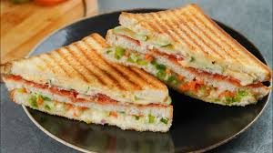

This veg sandwich is one of the easiest and healthiest recipes that anyone can prepare in just a few minutes. It is perfect for students and beginners who want something tasty without spending too much time cooking.

Preparation Time: 5 minutes
Difficulty Level: Easy
Best For: Breakfast / Evening Snacks
Healthy or Not? Healthy